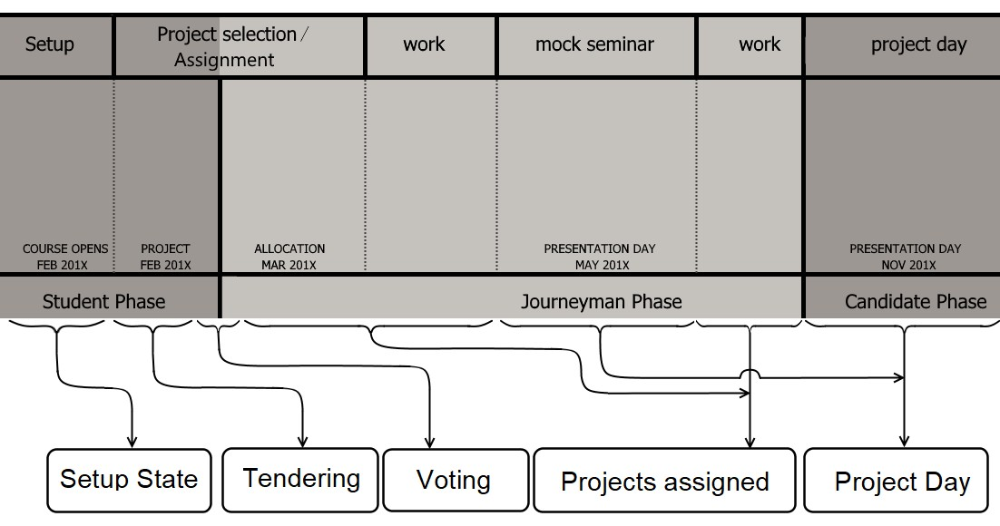
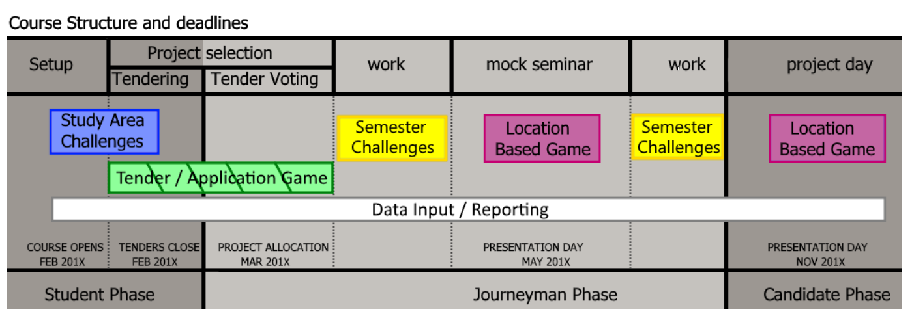

Initial Mapping of the Student's Journey Through the Academic Year
Exploring the work that was done through the course of the academic year, it became clear that the student went through three distinct phases during the year:
- The Student Phase: Here the student is still in the mindset of writing tests and examinations from their previous courses, and they have not yet been given a large project to do in their studies.
- The Journeyman Phase: In this phase, the student has moved past the student mindset where they can cram for the exam. They are realising that a large project needs a different approach. For most of the students, this will be their first large project.
- The Candidate Phase: In this phase, students have completed their first large project, and if successful they are now one step closer to their professional registration. Candidates have a professional responsibility to also be examples to the students who will come after them, so in this phase students will have the chance to show off what they know to junior students.
In each of these phases, there were a number of points identified where different interventions could be used to enrich the experience for the students, as can be seen in the image above. The final mapping of where different system interventions would be active can be seen below. The details of the Location Based Games are documented on that page, so here we will focus on the Tender Game and the Challenge Based System.
